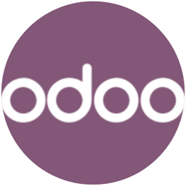

ADMINISTRADOR
El administrador posee acceso completo al sistema.
Puede:
- Crear usuarios
- Instalar módulos
- Modificar configuraciones
- Gestionar permisos
- Acceder a toda la información empresarial

La seguridad de la información es uno de los aspectos más importantes dentro de cualquier Sistema de Gestión Empresarial. Las empresas almacenan una gran cantidad de datos relacionados con clientes, empleados, ventas, facturación y documentos internos, por lo que es fundamental proteger toda esta información frente a accesos no autorizados.
Odoo protege la información empresarial mediante un sistema de autenticación basado en usuarios y contraseñas.
Cada persona que utiliza el sistema debe iniciar sesión con una cuenta propia, lo que permite identificar las acciones realizadas dentro de la plataforma y mantener un mayor control de seguridad.
Además, el sistema permite limitar el acceso a determinados módulos y funciones dependiendo del tipo de usuario.
Uno de los elementos más importantes de la seguridad en Odoo es la gestión de roles y permisos.
El sistema permite crear diferentes tipos de usuarios con privilegios específicos según las funciones que desempeñen dentro de la empresa.
Gracias a esto, cada empleado únicamente puede acceder a la información necesaria para realizar su trabajo.
El administrador posee acceso completo al sistema.
Puede:
Odoo utiliza un sistema de permisos para controlar qué acciones puede realizar cada usuario. Los permisos permiten definir si un usuario puede o no:
De esta manera, el sistema garantiza un mayor control sobre la seguridad empresarial.
Además de los usuarios y permisos, Odoo incorpora otras medidas de protección.
Es recomendable utilizar contraseñas complejas para aumentar la seguridad del sistema
Las copias de seguridad permiten recuperar la información en caso de fallo o pérdida de datos
El sistema puede registrar acciones realizadas por los usuarios para mejorar el control interno
Cada usuario solo puede acceder a los módulos autorizados por el administrador
Mantener Odoo actualizado ayuda a corregir errores y mejorar la seguridad